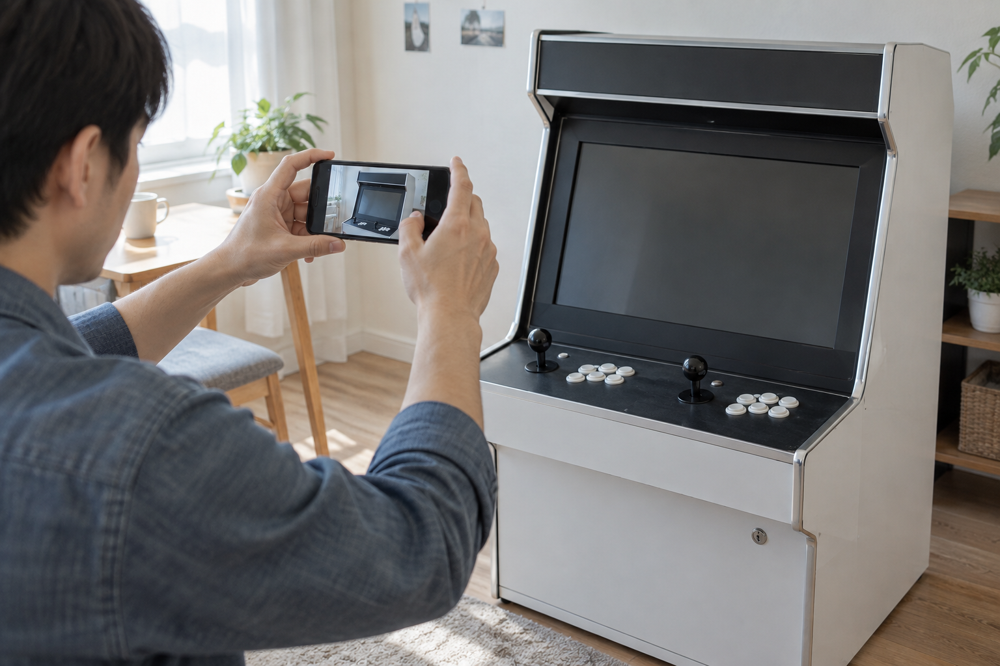

새 오락기와 중고 오락기는 어느 쪽이 무조건 낫다고 정하기보다, 같은 제품인지와 실제 구성, 현재 상태, 전달·설치 조건, 구매 뒤 문의 가능 범위를 같은 순서로 비교하면 선택 기준이 분명해집니다. 새 제품은 판매 페이지와 주문 조건을 확인하고, 중고 제품은 판매자가 남긴 사진·영상과 설명을 실제로 받을 구성에 맞춰 대조하세요.
먼저 같은 제품인지와 구성부터 맞춰보세요
비교하려는 두 제품의 상품명, 형태, 포함된 조작부·연결 기기·게임팩을 각각 적어 보세요. 크기나 외관이 비슷해도 구성은 다를 수 있습니다. 노리박스 제품 목록에도 신형HX, TV 연결형, 분리형 등 여러 형태의 가정용 오락기가 별도 상품으로 안내되어 있으므로, 중고 판매 글의 사진만 보고 같은 제품이라고 판단하지 않는 편이 좋습니다.
새 제품과 중고 제품은 상품명과 실제 포함 구성을 맞춘 뒤에 비교해야 합니다.
- 판매 글이나 제품 페이지의 정확한 상품명
- 스탠드형·좌식형·TV 연결형처럼 사용할 형태
- 조이스틱, 전원선, 게임팩, 연결선처럼 함께 오는 구성
- 설치할 장소에 필요한 크기와 이동 경로
가정용 오락기를 처음 설치할 때 확인할 항목을 함께 보면 설치 장소와 연결 준비를 미리 점검할 수 있습니다.
새 제품은 주문 전에 판매 조건을 읽어보세요
새 제품을 고를 때는 제품 페이지의 사진만 보지 말고 주문할 구성, 배송 방법, 설치 전 준비 사항, 문의 채널을 읽어 보세요. 옵션이나 동봉품이 있는지, 설치 장소에서 무엇을 준비해야 하는지 적어 두면 다른 판매 글과도 같은 항목으로 비교할 수 있습니다. 구매 뒤 안내나 지원 범위는 판매처와 상품마다 다를 수 있으므로, 필요한 내용은 주문 전에 판매자에게 확인하세요.
새 제품은 주문 페이지에 적힌 구성과 구매 전 문의 답변을 기준으로 판단하는 것이 좋습니다.

중고 제품은 현재 상태를 기록으로 확인하세요
중고 제품은 언제 만들어졌는지나 사용 기간만으로 상태를 알기 어렵습니다. 전원이 켜지는 모습, 화면, 조이스틱과 버튼, 본체 외관, 연결 단자처럼 실제 받을 제품의 현재 모습을 사진이나 영상으로 요청해 확인하세요. 판매자가 설명한 구성과 화면·조작 영상이 같은 물건을 가리키는지도 살펴보고, 확인하기 어려운 부분은 추측으로 넘기지 말고 질문으로 남기세요.
중고 제품은 실제 화면과 조작부가 보이는 기록을 기준으로 현재 상태를 확인해야 합니다.
조이스틱과 버튼을 확인하는 방법을 참고하면 조작부를 볼 때 물어볼 항목을 정리할 수 있습니다.
전달·설치와 구매 뒤 문의 범위를 나눠 확인하세요
제품 자체가 마음에 들어도 누가 어떻게 옮기고 설치하는지, 도착 뒤 문제가 보이면 어느 채널로 문의하는지에 따라 준비가 달라집니다. 중고 거래는 인수 방식과 판매자가 안내하는 범위를 미리 확인하고, 새 제품은 판매 페이지와 주문 안내의 배송·문의 내용을 확인하세요. 노리박스 사이트에는 제품 목록과 함께 연락 페이지, 고객센터와 카카오톡 상담 채널이 안내되어 있어 필요한 제품 정보를 먼저 확인한 뒤 문의할 수 있습니다.
제품 비교에는 기기 상태뿐 아니라 인수 방법과 구매 뒤 확인할 문의 경로도 포함됩니다.
노리박스 제품자세히보기에서 새 제품의 형태와 판매 페이지를 살펴보고, 비교 중 확인할 내용은 연락하기에서 문의 채널을 확인하세요.
내 사용 환경으로 마지막 비교표를 만드세요
두 선택지의 확인 결과를 한 장에 적고, 집 안에서 둘 위치와 함께 사용할 사람, 연결할 화면이나 TV, 혼자 옮길 수 있는지처럼 본인 환경을 기준으로 다시 보세요. 새 제품과 중고 제품의 장단점은 제품마다 달라집니다. 확인되지 않은 내용은 빈칸으로 두고 판매자에게 묻는 편이, 조건을 짐작해 결정하는 것보다 안전합니다.
마지막 선택은 가격 한 항목이 아니라 확인된 구성과 상태가 내 설치 환경에 맞는지로 정해야 합니다.